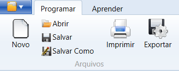
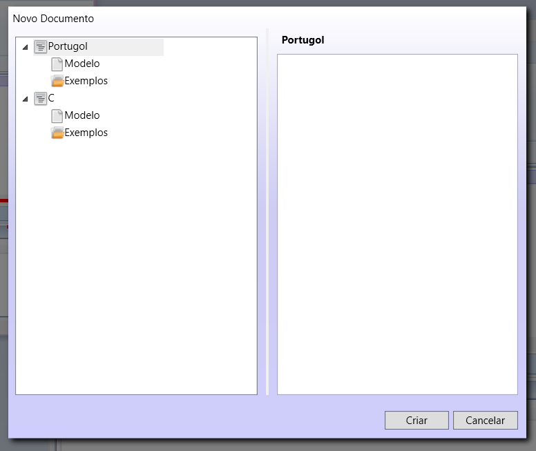
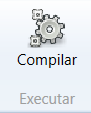
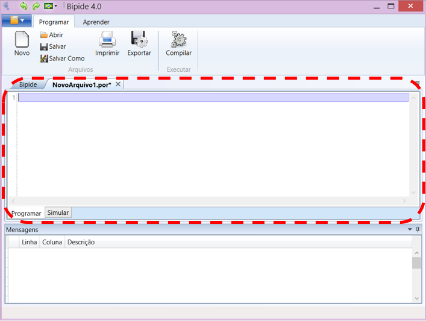
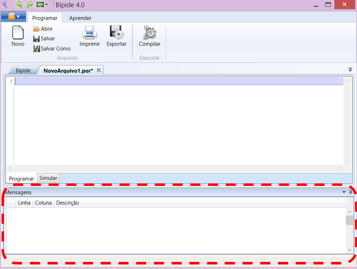

Allows editing and compiling programs written in C language and Portugol.
Archive Menu

Has the following features:
- New - Creates a new program (Portugol or Assembly)
- Open - Opens an existing program
- Save - Save the current program
- Save As - Save a copy of the current program
- Print - Prints the current program
- Export - Allows you to export the program formats: Assembly, Binary, Hex, MIF and VHDL
Open Menu

Allows selection of examples and model in C and Portugol
Edit Menu
Has the following features:
- Undo - Undo the last action performed.
- Redo - Redo the last undone action. < li>
Run Menu

Have functionality and permission to build simulation.
Editor

Enables writing and editing programs in Portugol or Assembly
has the following features:
- Ability to open multiple files simultaneously, separated by tabs
- Identification of reserved words and symbols of language
- Identification opening and closing blocks of programs
- Identification opening and closing brackets
- Possibility of expansion and contraction of program blocks
Menssages

Displays error messages that occurred during compilation of the program and relevant messages to the alert program.
has the following features:
- indication of the line and column of the program where the error